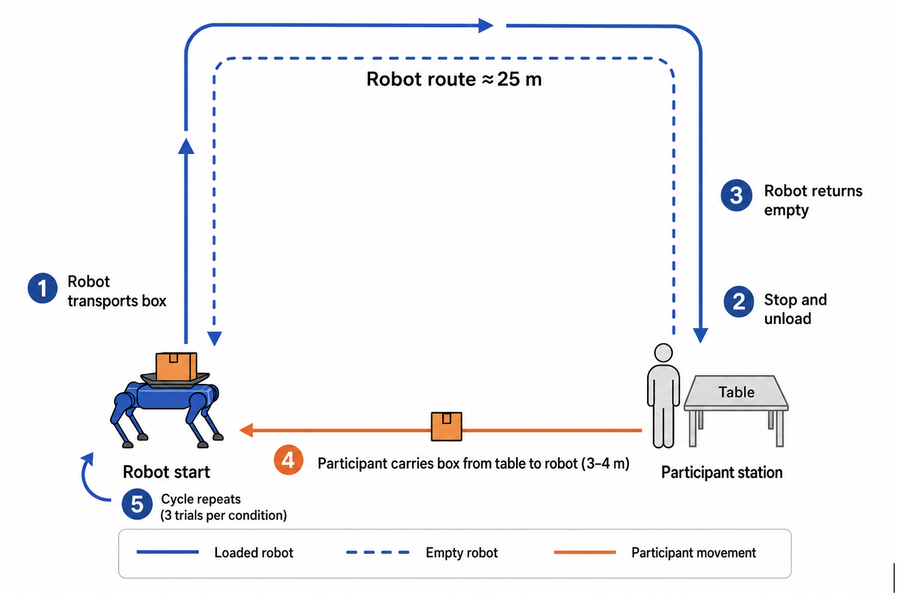

During my two-month research visit to Bristol Robotics Laboratory, UWE Bristol, I led a collaborative study involving an upper-body exoskeleton, a Unitree GO2 mobile robot and a shared box-handling task. We examined how combining these technologies affected workload, trust and perceived usefulness.
The problem
An exoskeleton can support lifting, while a mobile robot can transport a load. Using them together also requires the person to coordinate their movements with both technologies.
The wearer needs to handle the box, work with the exoskeleton’s assistance and manage the handover to the robot. Support during one part of the task could therefore introduce additional effort elsewhere.
We wanted to understand whether combining these technologies made the overall activity easier, and where it created new demands. We also examined participants’ experiences of each technology separately: confidence in the robot did not necessarily mean confidence in the wearable.
My role
I designed and led the study during my visit, working with colleagues at Bristol Robotics Laboratory. I developed the experimental setup and procedure, recruited 20 adults, ran the study sessions and analysed the questionnaire and interview data.
The practical work involved working with the upper-body exoskeleton, the mobile robot and IMU sensors. I also gained introductory experience with ROS while working with the setup.
The project extended my experience from studying simulated warehouse encounters to conducting research with physical technologies, where equipment setup, participant movement and task coordination all needed to work together.

Designing the study
Each participant completed the same box-handling task with and without the exoskeleton, while the mobile robot remained part of both conditions. This allowed us to examine what wearing the exoskeleton added to the activity.
Participants lifted a box onto the robot’s tray, coordinated its transport and unloaded it at the destination. Warm-up trials gave them time to practise, followed by three recorded trials in each condition.
Comparing the conditions within each person helped account for individual differences in experience and confidence.
We combined workload, trust and perceived-usefulness questionnaires with task observations and follow-up interviews. This helped us connect differences in the ratings with participants’ explanations of what felt helpful, awkward or demanding.


What we found
Assistance could be useful while adding workload
Participants found the exoskeleton useful, yet reported workload was significantly higher when wearing it. Median workload increased from 1.83 without the exoskeleton to 2.42 with it.
Interviews helped explain this result. Wearing the device introduced additional coordination demands, including matching the assistance to participants’ movements and the robot handover. Participants could appreciate the support while still finding the combined activity more demanding.
This pointed to a design question: how can assistance fit the person’s movement and timing without requiring more attention to manage it?
Trust depended on the technology and the task
Participants distinguished between their experiences of the robot and the exoskeleton. They could become more confident in the robot’s movements while still adjusting to the wearable or questioning how much control they had over its assistance.
Overall trust questionnaire scores did not differ significantly between conditions. The interviews added detail by showing which parts of the activity participants felt comfortable relying on and which still required caution.
Evaluating the technologies separately helped preserve these differences rather than treating trust as a single judgement about the whole setup.
Timing and control were priorities for design
Participants’ accounts highlighted the importance of understanding when assistance would occur and being able to control it. These needs were particularly relevant during handovers, when the person was already coordinating their body, the box and the robot.
One direction I would explore next is a cue indicating when assistance is about to begin, paired with a way for the wearer to pause it. This would need testing to establish whether the cue gives enough time to respond and makes coordination easier.
The outcome
The study identified coordination demands that emerged when wearable assistance and mobile robotics became part of the same task. It showed that perceived usefulness did not necessarily translate into lower workload, and that participants’ confidence could differ between technologies.
The findings provide concrete priorities for further development: assistance timing, wearer control and the handover between person and robot. Repeated sessions over a longer period would help establish whether the additional workload decreases with practice or remains a feature of the interaction.